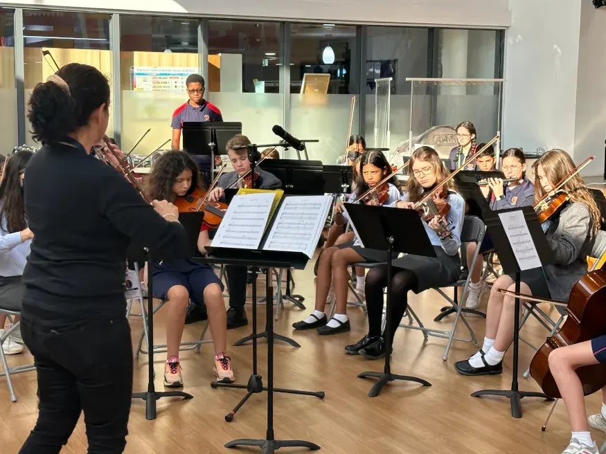
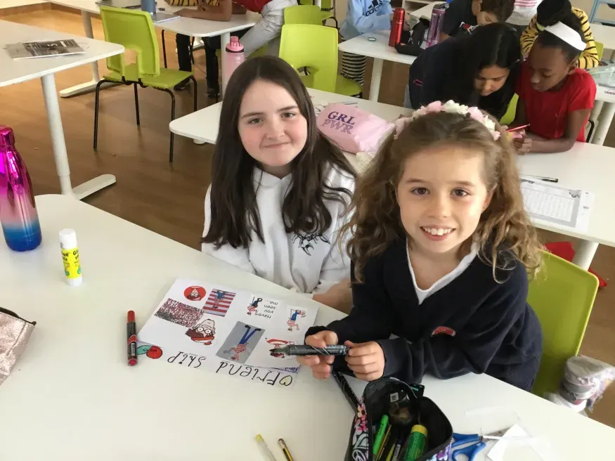
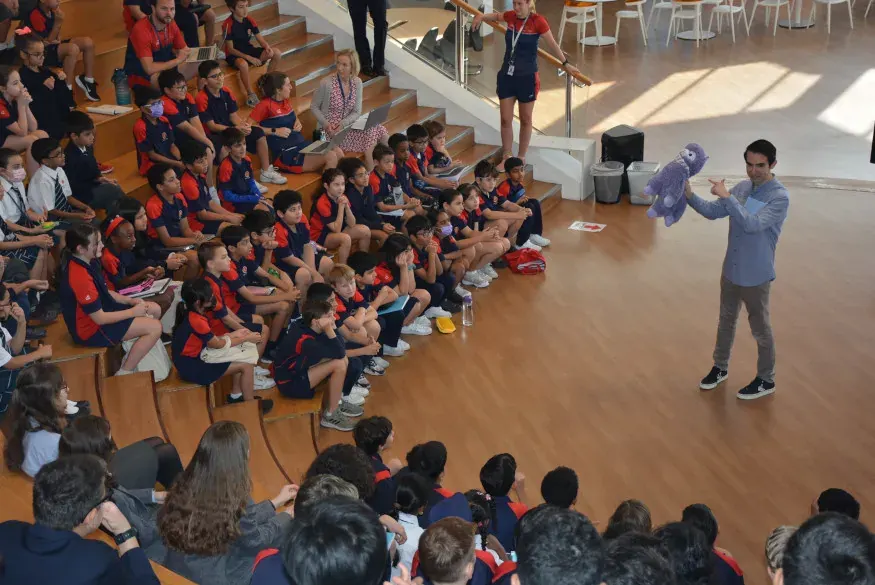
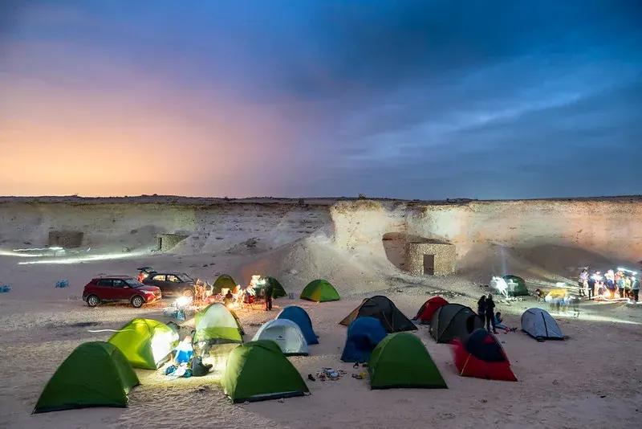
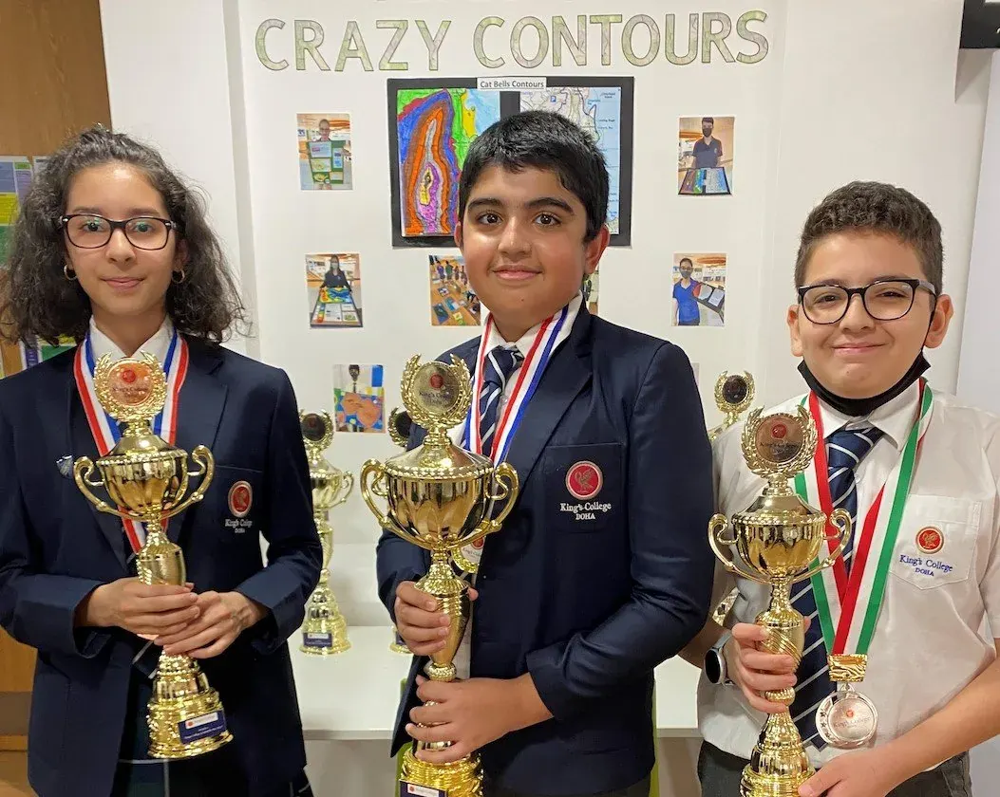
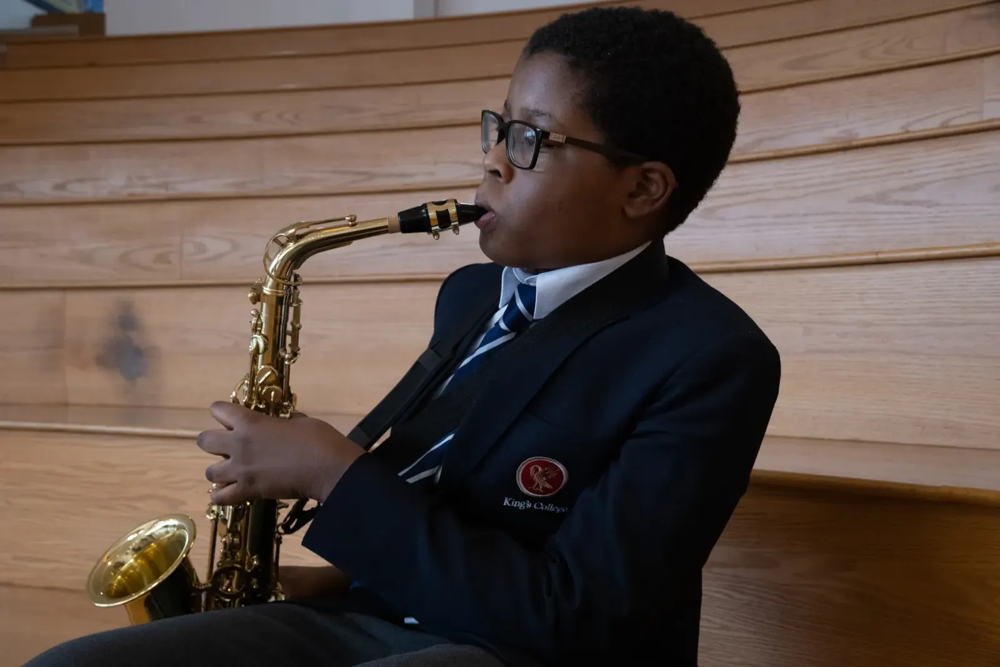
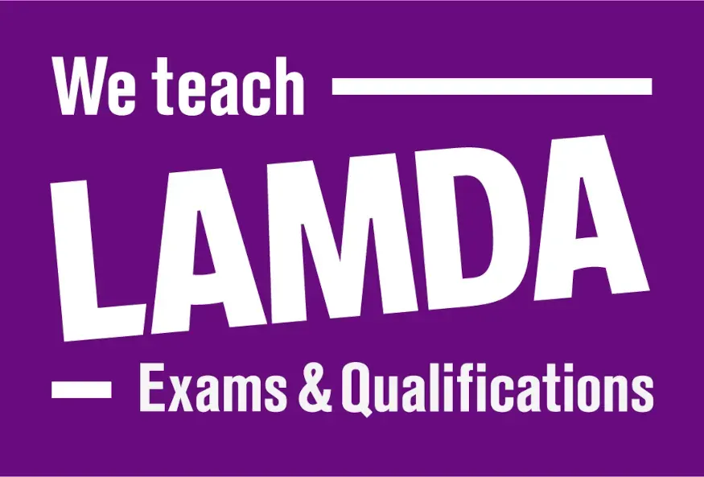
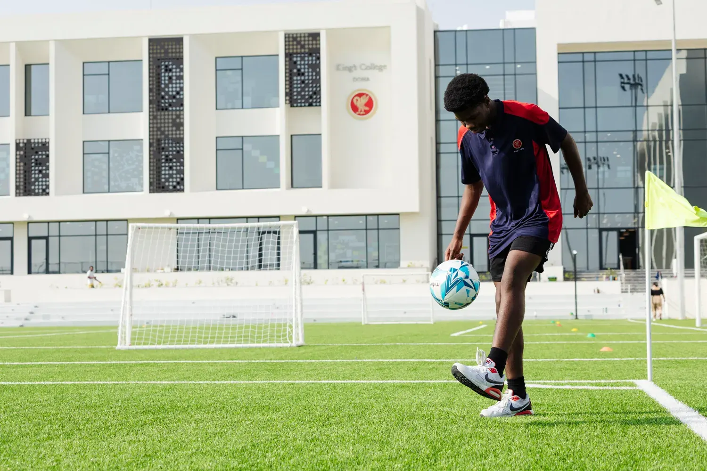
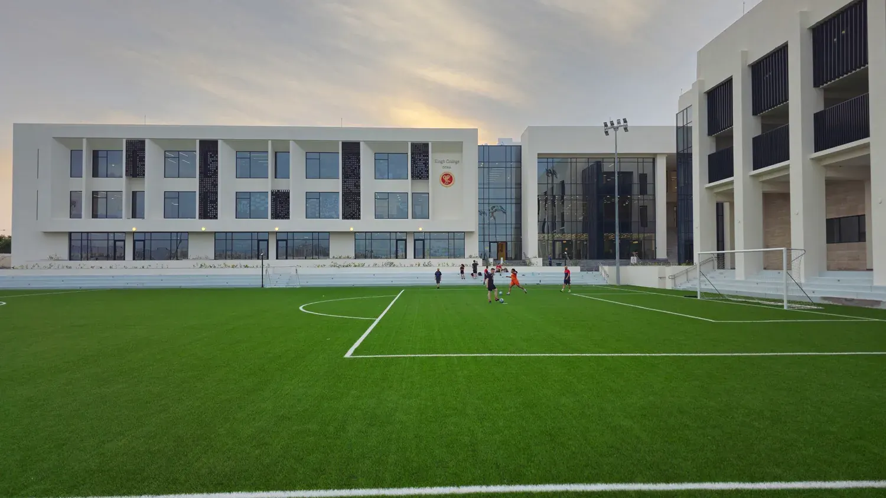

- Home
- Beyond the Classroom
Beyond the Classroom
Enrichment, Ambition, and Opportunity
The intellectual and social life of King’s College Doha extends far beyond the traditional timetabled lesson. We believe in providing an extensive range of activities and programs to cultivate genuine curiosity and leadership skills. Utilizing the specialist facilities across both our Al Thumama and Mesaimeer campuses, we offer a distinctive educational breadth that enriches the lives of every student, encouraging a lifelong love of learning.
Jump down to:
- Co-Curricular Activities (CCAs)
- Electives Programme
- The World Scholar’s Cup
- Duke of Edinburgh’s International Award (DofE)
- Model United Nations (Model UN)
- Music and Performance
- LAMDA Examinations
- Sport and Athletic Excellence
Co-Curricular Activities (CCAs)
Our extensive Co-Curricular Activities program takes place after school, enriching the lives of students across all phases. In the Pre-Prep School, activities like Gymnastics, Ballet, and Art Club are offered after the school day, providing our youngest children with creative and stimulating experiences. In the Prep and Senior Schools, options are regularly reviewed to reflect the diverse interests of our community, ensuring every student can pursue a creative interest, sporting activity, or try something entirely new.

Electives Programme
Unique to King’s College Doha, our innovative Electives Programme is a modular, non-examined component of the extended school day on the Mesaimeer Campus. Students in Year 3 and above spend 40 minutes, four days per week, in their chosen activity, which rotates every half-term. Offerings range widely, from new languages, photography, and film appreciation to entrepreneurship and forensic psychology, enabling students to explore passions without academic pressure.

The World Scholar’s Cup
We are proud that nearly 15% of King's students participate in the internationally revered World Scholar’s Cup. This global competition brings together thousands of ambitious children across six continents. Offered to Prep and Senior School students, the WSC is designed to emphasize learning while having fun, covering six academic subjects through team debate, collaborative writing, and The Scholar’s Bowl quiz.

Duke of Edinburgh’s International Award (DofE)
The Duke of Edinburgh’s International Award is a central part of our enrichment for Senior School students, offering the opportunity to complete the Bronze, Silver, and Gold Awards. Through mandatory sections involving volunteering, physical fitness, skill development, and expedition, students gain essential life attributes for work and university, such as resilience, problem-solving, team-working, and leadership.

Model United Nations (Model UN)
Model UN is offered to Senior School students as a valuable experience that helps develop confidence in global leadership, deepens awareness of international issues, and strengthens public speaking skills. Our participants engage in local, regional, and global competitions, providing a powerful platform for making new friends and enhancing university applications.

Music and Performance
Music is woven into the very fabric of a King’s College education. We offer a broad instrumental program alongside opportunities for solo and group performances in concerts and musical productions. The King’s College Choir is particularly well-regarded in Qatar, having won awards for its excellence. Our program focuses on performance, composition, and listening skills, improving confidence and creativity.

LAMDA Examinations
King’s College is unique in Doha for offering specialized LAMDA (London Academy of Music and Dramatic Art) lessons across the Pre-Prep, Prep, and Senior Schools. These qualifications help students of all ages develop essential lifelong skills in communication and performance. We are particularly proud of our consistently excellent outcomes, with over 90% of participants achieving a Distinction—the highest possible award.

Sport and Athletic Excellence
King’s College Doha maintains an enviable reputation for the quality of its sporting teams and the expertise of our coaching staff. Students receive expert coaching in sports including Football, Swimming, Basketball, Volleyball, Cricket, Rugby, and Athletics. We compete in top-tier competitions such as the Qatar Private Primary Schools Sports (QPPSSA) and the Qatar United English Speaking Schools (QUESS) leagues, fostering a healthy attitude towards fitness and competition at every level.

Start Your Child’s King’s College Journey
Unlock your child’s full potential with a world-class education. Join King’s College Doha and give your child the opportunity to flourish at one of Qatar’s leading British schools – rooted in heritage and alive with innovation.
Apply Now